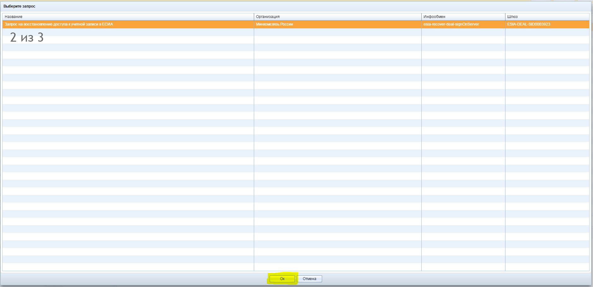
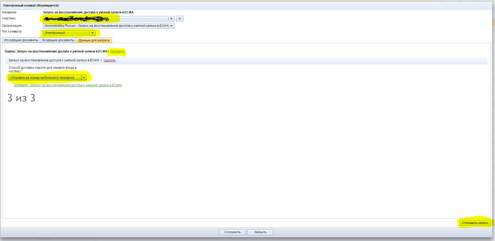
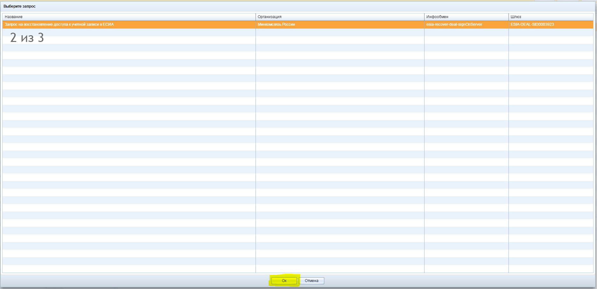
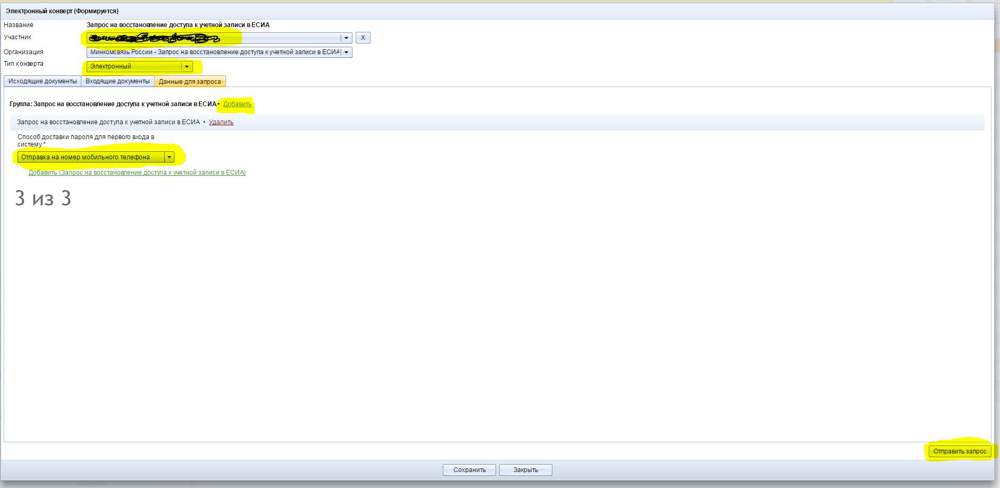

Данная инструкция поможет оперативно решить часто возникающие вопросы, касающиеся услуг ЕСИА в режиме "онлайн".
Например к Вам пришел посетитель с талоном на одну из услуг ЕСИА.
Он не знает, есть у него учётная запись или нет, не знает, правильно она заполнена или нет, может он вообще думает, что МФЦ и есть Госуслуги.
Даже если посетитель сам не может сформулировать, что ему нужно, его просто отправили из ГАИ "Иди в МФЦ, регистрируйся и подавай на права".
Просто выбирайте соответствующие пункты инструкции одновременно с тем, что сейчас происходит, будь то вопрос к посетителю или действие АИС.
Или можно просто почитать комментарии к вопросам и ответам.
Недавнее изменение процессов со стороны Госуслуг позволяет сотруднику МФЦ сделать всё, что посетителю необходимо, без детектива под названием "Разобраться в учётных записях посетителя".
Поэтому вы не увидите в данном руководстве пунктов "зайдите на портал, восстановите учётную запись через телефон, удалите некорректно заполненную учётную запись и пр."
Справа от основного блока будет отображаться развёрнутый комментарий по теме этого блока. При наведении на некоторые варианты ответов, находящихся в блоках светло-зелёного цвета тоже будут появляться комментарии и советы
* Все пункты подразумевают, что АИС работает. Ошибки, которые встречаются в вариантах и тексте не относятся к возможным сбоям самой АИС. Если встретилась ошибка, не указанная в инструкции и вы не знаете, что с ней делать - звоните в IT-отдел
Для продолжения нажмите кнопку
У заявителя есть с собой паспорт и СНИЛC?
В паспорте и СНИЛС ФИО совпадают?
Какая услуга у посетителя в талоне?
Спрашиваем у посетителя: регистрировались ли вы когда-нибудь на госуслугах? Могли ли вас зарегистрировать на работе? Может СМС-ки приходили когда-нибудь с номера "gosuslugi"?
Новое дело на регистрацию
Подтверждение через ЭЦП
Есть ранее выданные паспорта?
В ЭЦП подставляем паспорта начиная с последнего
Подтверждение через ЭЦП
Новое дело на восстановление
Выбираем ответственного
Заносим данные в АИС
Регистрируем дело
Отправляем запрос
Смотрим полученный PDF-файл
Исправляем ошибку в карточке участника, после этого сохраняем целиком дело еще раз
Через процедуры завершаем дело ВАЖНО! Первый вход в личный кабинет посетителю лучше сделать через СНИЛС и пароль для первого входа, пришедший на телефон по SMS


 


